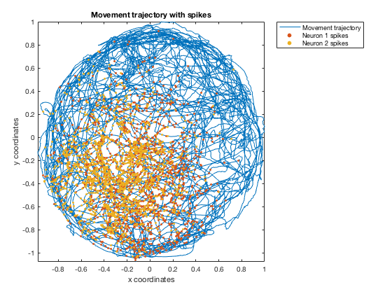
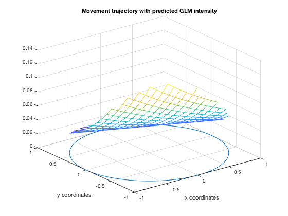
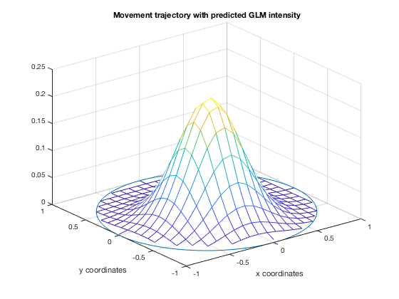
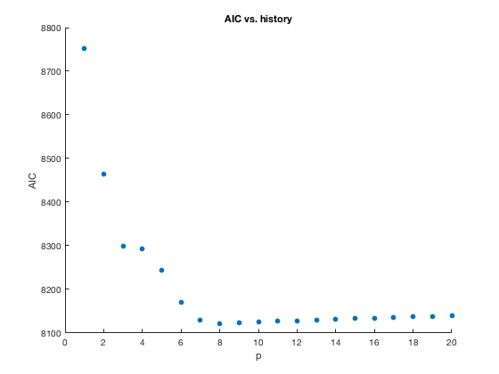
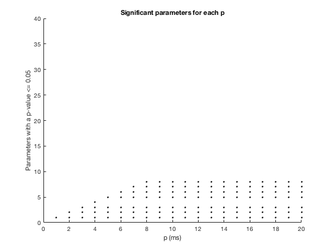
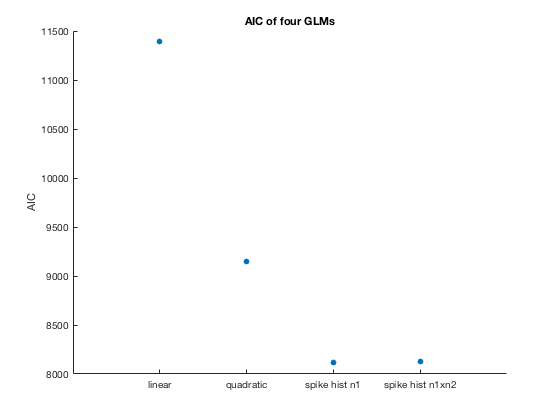
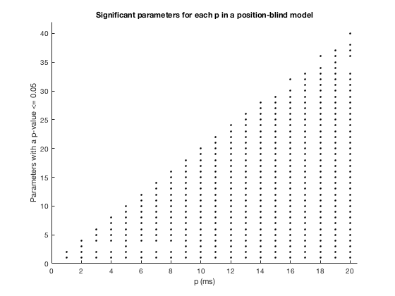

Contents
clear all
close all
load hipp_data.mat
Movement trajectory with spike times
figure
plot(xN, yN)
sz = 10;
hold on
plotSpikes1 = [xN(spikes == 1) yN(spikes == 1)];
scatter(plotSpikes1(:,1), plotSpikes1(:,2), sz, 'filled');
plotSpikes2 = [xN(spikes2 == 1) yN(spikes2 == 1)];
scatter(plotSpikes2(:,1), plotSpikes2(:,2), sz, 'filled');
title(['Movement trajectory with spikes'])
xlim([min(xN) max(xN)])
ylim([min(yN) max(yN)])
xlabel(['x coordinates'])
ylabel(['y coordinates'])
legend('Movement trajectory', 'Neuron 1 spikes', 'Neuron 2 spikes', 'Location', 'NortheastOutside')
disp(['The two neurons seem to fire at similar spatial locations of the animal.'])
The two neurons seem to fire at similar spatial locations of the animal.

GLM
[b,dev,stats] = glmfit([xN yN],spikes,'poisson');
b0 = b(1); b1 = b(2); b2 = b(3);
disp(['The fitted model is lambda(t) = exp{' num2str(b0) ' + ' num2str(b2) 'xN(t) + ' num2str(b2) 'yN(t)}.'])
disp(['The p-value of beta_0 is ' num2str(stats.p(1)) ', of beta_1 is ' num2str(stats.p(2)) ', and of beta_2 is ' num2str(stats.p(2)) '.'])
disp(['All of these values are smaller than a p-value of 0.05, indicating that they are all statistically significant.'])
figure
[x_new,y_new]=meshgrid(-1:.1:1);
lambda_new = exp(b0 + b1*x_new + b2*y_new );
lambda_new(find(x_new.^2+y_new.^2>1))=nan;
h_mesh = mesh(x_new,y_new,lambda_new,'AlphaData',0);
hold on;
plot3(cos(-pi:1e-2:pi),sin(-pi:1e-2:pi),zeros(size(-pi:1e-2:pi)));
title(['Movement trajectory with predicted GLM intensity'])
xlabel(['x coordinates'])
ylabel(['y coordinates'])
disp(['The GLM seems to predict the relative geographical area of highest firing, closbut does not seem to be as specific (includes the lower left corner of the map).'])
The fitted model is lambda(t) = exp{-3.2492 + -1.1801xN(t) + -1.1801yN(t)}.
The p-value of beta_0 is 0, of beta_1 is 8.4817e-27, and of beta_2 is 8.4817e-27.
All of these values are smaller than a p-value of 0.05, indicating that they are all statistically significant.
The GLM seems to predict the relative geographical area of highest firing, closbut does not seem to be as specific (includes the lower left corner of the map).

GLM with quadratic penalty
[b_quad,dev_quad,stats_quad] = glmfit([xN xN.^2 yN yN.^2],spikes,'poisson');
b0 = b_quad(1); bx1 = b_quad(2); bx2 = b_quad(3); by1 = b_quad(4); by2 = b_quad(5);
disp(['The fitted model is lambda(t) = exp{' num2str(b0) ' + ' num2str(bx1) 'xN(t) + ' num2str(bx2) 'xN(t)^2 + ' num2str(by1) 'yN(t) + ' num2str(by2) 'yN(t)^2}.'])
disp(['The p-value of beta_0 is ' num2str(stats_quad.p(1)) ', of beta_1 is ' num2str(stats_quad.p(2)) ', of beta_2 is ' num2str(stats_quad.p(2)) ', of beta_3 is ' num2str(stats_quad.p(3)) ', of beta_4 is ' num2str(stats_quad.p(4)) ', and of beta_5 is ' num2str(stats_quad.p(5)) '.'])
disp(['All of these values are smaller than a p-value of 0.05, indicating that they are all statistically significant.'])
figure
[x_new,y_new]=meshgrid(-1:.1:1);
lambda_quad = exp(b0 + bx1*x_new + bx2*x_new.^2 + by1*y_new + bx2*y_new.^2);
lambda_quad(find(x_new.^2+y_new.^2>1))=nan;
h_mesh = mesh(x_new,y_new,lambda_quad,'AlphaData',0);
hold on;
plot3(cos(-pi:1e-2:pi),sin(-pi:1e-2:pi),zeros(size(-pi:1e-2:pi)));
title(['Movement trajectory with predicted GLM intensity'])
xlabel(['x coordinates'])
ylabel(['y coordinates'])
disp(['With the quadratic terms, the GLM more closely matches relative spike density from the first trajectory map.'])
The fitted model is lambda(t) = exp{-1.8203 + -1.4522xN(t) + -5.8108xN(t)^2 + -2.4093yN(t) + -3.6624yN(t)^2}.
The p-value of beta_0 is 0, of beta_1 is 1.5192e-56, of beta_2 is 1.5192e-56, of beta_3 is 7.6532e-190, of beta_4 is 7.941e-141, and of beta_5 is 2.7378e-163.
All of these values are smaller than a p-value of 0.05, indicating that they are all statistically significant.
With the quadratic terms, the GLM more closely matches relative spike density from the first trajectory map.

AIC values to compare the two models
aic = dev + 2*(length(b)-1);
aic_quad = dev_quad + 2*(length(b_quad)-1);
disp(['The AIC of the first GLM model is ' num2str(aic) '. The AIC of the second GLM model with quadratic terms is ' num2str(aic_quad) '.'])
disp(['The AIC of the second GLM model is smaller, which indicates that including the quadratic terms minimizes information loss, making the second model better than the first at describing the data.'])
The AIC of the first GLM model is 11392.1633. The AIC of the second GLM model with quadratic terms is 9149.4665.
The AIC of the second GLM model is smaller, which indicates that including the quadratic terms minimizes information loss, making the second model better than the first at describing the data.
GLM with history of neuron 1
p_hist = struct([]);
b_hist = struct([]);
dev_hist = struct([]);
stats_hist = struct([]);
aic_hist = zeros(1,size(spikes_hist,2));
for p = 1:size(spikes_hist,2)
eval(sprintf('p_hist{%d} = spikes_hist(:,1:p);', p));
[b_hist{p}, dev_hist{p}] = glmfit([xN xN.^2 yN yN.^2 p_hist{p}], spikes, 'poisson');
aic_hist(p) = dev_hist{p} + 2*(length(b_hist{p})-1);
end
plot_aic_hist = aic_hist;
plot_aic_hist(2,:) = 1:size(spikes_hist,2);
figure
scatter(plot_aic_hist(2,:), plot_aic_hist(1,:), 'filled')
title(['AIC vs. history'])
xlabel(['p'])
ylabel(['AIC'])
disp(['The AIC reaches its optimal (lowest value) at p = 8; a model that includes 8 ms of spiking history is optimal.'])
The AIC reaches its optimal (lowest value) at p = 8; a model that includes 8 ms of spiking history is optimal.

GLM with interaction terms
for p = 1:size(spikes_hist,2)
eval(sprintf('p_hist2{%d} = spikes2_hist(:,1:p);', p));
[b_hist12{p}, dev_hist12{p}, stat_hist12{p}] = glmfit([xN xN.^2 yN yN.^2 p_hist{p} p_hist2{p}], spikes, 'poisson');
aic_hist12(p) = dev_hist12{p} + 2*(length(b_hist12{p})-1);
end
stats_p = zeros(length(stat_hist12{1,20}.p),size(spikes_hist,2));
for p = 1:size(spikes_hist,2)
stats_p(1:size(stat_hist12{1,p}.p),p) = (stat_hist12{1,p}.p <= 0.05);
end
stats_p = stats_p(6:end,:);
figure
sz = 8;
for p = 1:size(stats_p,2)
for param = 1:size(stats_p,1)
if stats_p(param, p) == 1
hold on
scatter(p, param, sz, 'filled', 'black');
end
end
end
title(['Significant parameters for each p'])
ylim([0 40])
xlabel(['p (ms)'])
ylabel(['Parameters with a p-value <= 0.05'])
disp(['None of the interaction parameters (from beta 21 onwards) are significant.'])
None of the interaction parameters (from beta 21 onwards) are significant.

Plot AIC for select models to determine parsimony
plot_aic_all(1,:) = [1 aic];
plot_aic_all(2,:) = [2 aic_quad];
plot_aic_all(3,:) = [3 min(aic_hist)];
plot_aic_all(4,:) = [4 min(aic_hist12)];
figure
scatter(plot_aic_all(:,1), plot_aic_all(:,2), 'filled');
title(['AIC of four GLMs'])
xlim([0 5])
xticks([1 2 3 4])
ylabel(['AIC'])
models = {'linear'; 'quadratic'; 'spike hist n1'; 'spike hist n1xn2'};
set(gca,'xticklabel', models)
disp(['The quadratic GLM with the first neuron''s spiking history has the lowest AIC and is thus the most parsimonious.'])
disp(['Specifically, this GLM includes the past ' num2str(find(aic_hist == min(aic_hist))), 'ms of spiking.'])
The quadratic GLM with the first neuron's spiking history has the lowest AIC and is thus the most parsimonious.
Specifically, this GLM includes the past 8ms of spiking.

GLM with only history and network interaction components
for p = 1:size(spikes_hist,2)
[b_noPos{p}, dev_noPos{p}, stat_noPos{p}] = glmfit([p_hist{p} p_hist2{p}], spikes, 'poisson');
aic_noPos(p) = dev_noPos{p} + 2*(length(b_noPos{p})-1);
end
stats_p_noPos = zeros(length(stat_noPos{1,20}.p),size(spikes_hist,2));
for p = 1:size(spikes_hist,2)
stats_p_noPos(1:size(stat_noPos{1,p}.p),p) = (stat_noPos{1,p}.p <= 0.05);
end
stats_p_noPos = stats_p_noPos(2:end,:);
figure
sz = 8;
for p = 1:size(stats_p_noPos,2)
for param = 1:size(stats_p_noPos,1)
if stats_p_noPos(param, p) == 1
hold on
scatter(p, param, sz, 'filled', 'black');
end
end
end
title(['Significant parameters for each p in a position-blind model'])
ylim([0 42])
xlim([0 20.5])
xlabel(['p (ms)'])
ylabel(['Parameters with a p-value <= 0.05'])
disp(['Unlike the other GLMs, this model considers spiking history rather than position as a main effect.'])
disp(['There are now significant interaction terms between the spiking history of the two neurons,'])
disp(['indicating that the interaction between the spike history of hippocampal neurons is independent of the rat''s position,'])
Unlike the other GLMs, this model considers spiking history rather than position as a main effect.
There are now significant interaction terms between the spiking history of the two neurons,
indicating that the interaction between the spike history of hippocampal neurons is independent of the rat's position,
